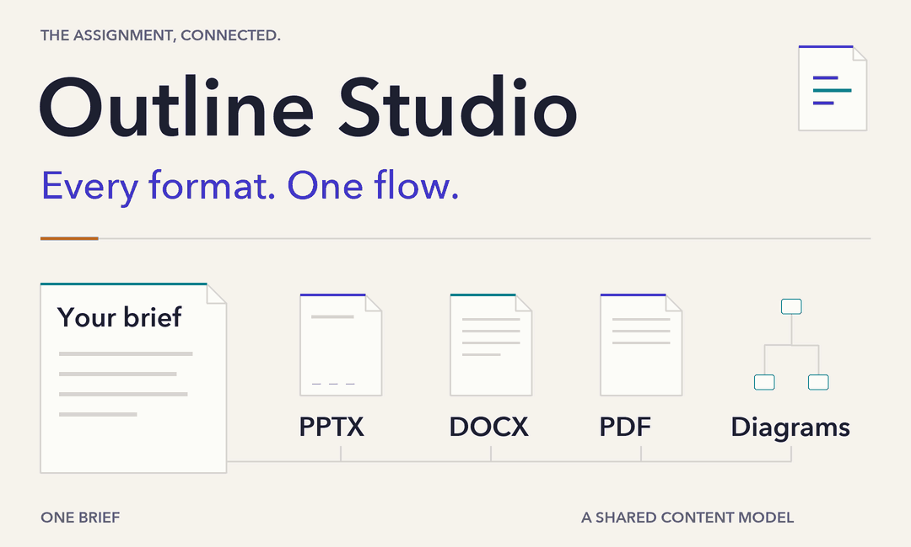
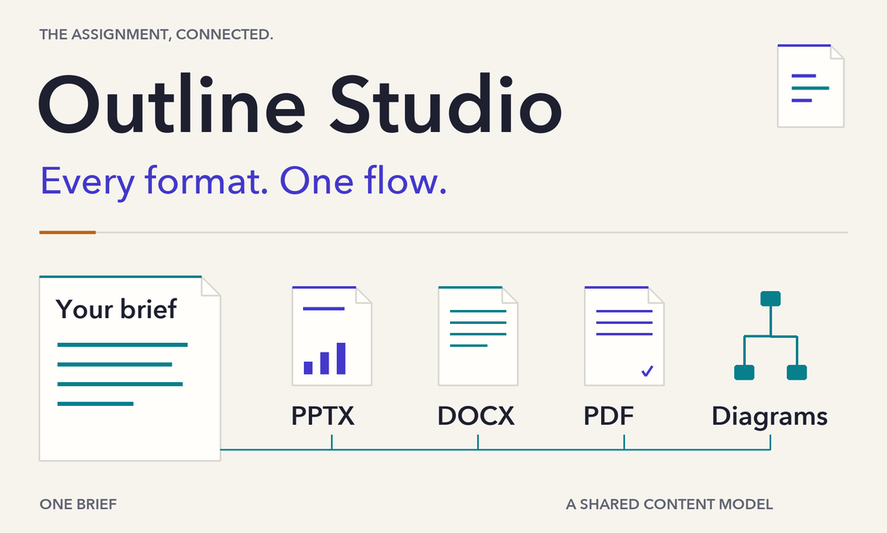
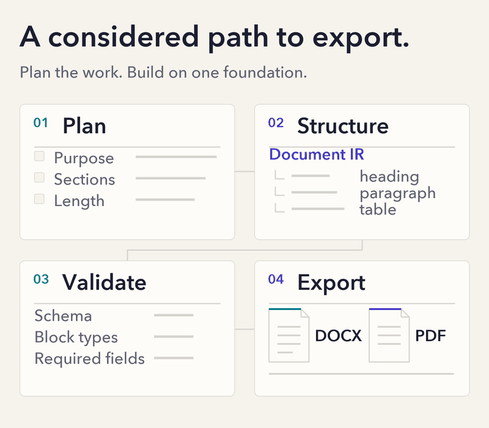
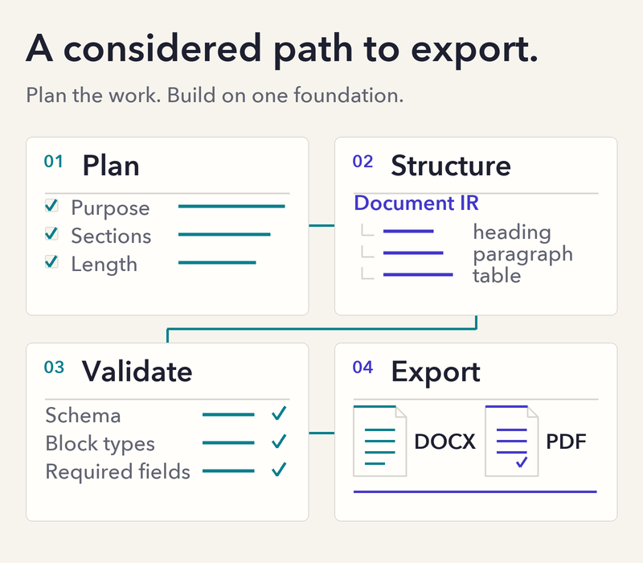
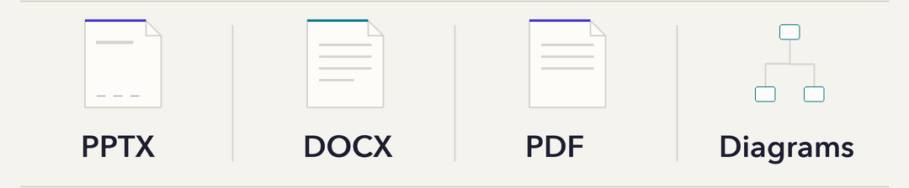
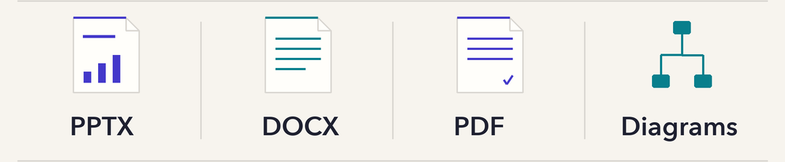

Outline Studio
Every format. One flow. Documentation artwork, not an application demo.
Three eight-second loops. Reduced-motion preferences select the PNGs. The stills are also available below every animation.
01 · Hero

Static hero PNG · 1080 × 650
Show hero still

02 · Workflow

Static workflow PNG · 800 × 700
Show workflow still

03 · Formats

Static format strip PNG · 1080 × 224
Show format still

Reproduction instructions · Project README source